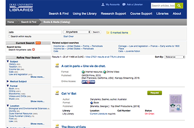
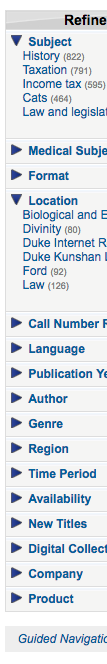
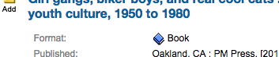

https://search.library.duke.edu/search?Ntt=cats&Ntk=Keyword&sugg=&local-filter=TRUE&affiliation=Duke
Screenshot:

To use Duke's resources efficiently and accomplish the goal of retrofitting some accessibility fixes in a timely manner, this review is limited to issues that will make it possible for a screen reader user to use the advanced search. It does not make it super easy to use, but it does make it possible to use. It does not cover issues like color contrast which would not benefit a screen reader only user.
This assessment is on a website that was made many years ago, its is not fair to compare it to an accessibility standard that did not exist when it was created. Assessments are in no way a commentary on how a websites was created or its code. It is simply a collection of recipes to improve its functionality and compliance with current standards.
This report was put together with haste in one day. These normally take 20 or 30 hours. Please excuse any spelling or grammar errors ;-)
<title> tagThis webpage does a full refresh when a search term or filter is changed. Currently it is not clear if a term has been successfully added or filtered. When a page loads on a screen reader the page title is announced to them. We can use this behavior to indicate that the requested search function was successfully applied.
For this search: https://search.library.duke.edu/search?Ntk=Keyword&Nr=OR%28210969%2cOR%28206474%29%29&Ne=2+206474+210899+210956+200043&N=4294967271+206437&Ntt=cats
The resulting title is:
<title>Duke Libraries Catalog: cats</title>For the search indicated above add its current filter set:
<title>Duke Libraries Catalog: cats - Filtered by - Subject: history - Format: book</title>Please listen to simulation of result
Add all terms to the title. When the page refreshes the entire title will be read to the screen reader user. Adding the term will:
The use of headings allows screen readers to interpret structure of the webpage so they can navigate easier Learn more.
<h1> that indicates the content on the webpage.It is an expected practice to have a heading above the search results to indicate what is being shown on the webpage. for screen reader users.
To avoid the need to write css we will hide the heading from sighted users. It will be read to a screen reader, but not be visible to sighted users.
<h1 class="element-invisible">Cats - Filtered by - Subject: history - Format: book</h1>CSS class necessary to hide from sighted users:
.element-invisible {
margin: 0;
padding: 0;
width: 1px;
position: absolute !important;
clip: rect(1px,1px,1px,1px);
overflow: hidden;
height: 1px;
}Screen readers can navigate using headers. ARIA to the rescue again. By using ARIA role="heading" we can add this information without the need for CSS.
<div id="facets">
<table width="100%" class="noBorder" id="currentSearch">
<tbody>
<tr>
<td class="shadedBox" align="center">
~ <span class="label" role="heading" aria-level="2">Current Search</span>
...
</td>
</tr>
...
</tbody>
</table>
<br>
<table width="100%" class="noBorder" id="facetBar">
<tbody>
<tr>
<td class="shadedBox" align="center">
~ <span class="label" role="heading" aria-level="2">Refine Your Search</span>
</td>
</tr>
...
<table id="lcClassificationDimensionBlock" width="100%">...</table>
</div>Ideally, the items nested below the H2's like "Subject", "Medical Subject", "Format", etc would be added as faux H3, but there are higher priority items.
Landmark elements are used to improve the keyboard navigation of the page for assistive technology. Learn more.
While tables are primarily intended for the presentation of tabular information or data. In the past they were commonly used to control page layout and formatting. Layout tables can introduce difficulties to screen readers.
It would be too invasive to rewrite the visual layout of the page to use <div>s. Multiple nested tables makes navigating the webpage difficult at best. But, it is not practical to fix on our timeline.
We can mitigate the issue by retrofitting ARIA Landmarks to assist screen readers in navigating the page efficiently. This is relatively non-invasive with a big positive impact.
ARIA attributes to the rescue!
First, the current DOCTYPE is set to the XHTML transitional dtd.
<!DOCTYPE html PUBLIC "-//W3C//DTD XHTML 1.0 Transitional//EN"
"http://www.w3.org/TR/xhtml1/DTD/xhtml1-transitional.dtd">
To use ARIA attributes we should change it to XHTML+ARIA dtd (this is very safe and won't cause issues elsewhere):
<!DOCTYPE html PUBLIC "-//W3C//DTD XHTML+ARIA 1.0//EN"
"http://www.w3.org/WAI/ARIA/schemata/xhtml-aria-1.dtd">Next, we can leave the layout as-is. We just need to paste a few ARIA attributes.
<table border="0" align="center" id="mainContent" cellpadding="0">
<tr>
~ <td colspan="2" role="banner">
...
~ <table width="100%" border="0" id="searchBar" class="catalogSearchBarCell shadedFacet box" role="search" aria-label="primary search input">...</table>
</td>
</tr>
<tr>
<td id="facetsColumn">
<div id="facets">
~ <table width="100%" class="noBoarder" id="currentSearch" aria-label="current selected criteria" role="search">...</table>
<br>
~ <table width="100%" class="noBoarder" id="facetBar" aria-label="refine selected criteria" role="search">...</table>
<br>
<table id="lcClassificationDimensionBlock" width="100%">...</table>
</div>
</td>
~ <td id="resultsColumn" aria-label="search results" role="main">...</td>
</tr>
<tr>
~ <td colspan="2" role="contentinfo">
<div id="madlib-footer">...</div>
</td>
</tr>
</table>Labels ensure that form controls are announced properly by assistive technologies, like screen readers. Learn more.
Visual location:
HTML location:
<td>
<label for="query"><img src="images/clear.gif" border="0" width="0" height="0" alt="Enter search terms"></label>
<input type="text" size="40" name="query" id="Ntt" class="catalogSearchFormElement ac_input" value="cats" autocomplete="off">
</td>The <label> already exists but does not associate itself to the input. Modern browsers associate the for attribute to the id, not the name. To fix just change the label from for="query" to for="Ntt".
Additional debugging details
Selector:
1,HTML,1,BODY,1,TABLE,0,TBODY,0,TR,0,TD,6,TABLE,0,TBODY,1,TR,0,TD,1,TABLE,0,TBODY,0,TR,0,TD,1,TABLE,6,TBODY,0,TR,1,TD,1,SELECT
Path:
#Ntk
More detailed explanation:
Fix any of the following:
aria-label attribute does not exist or is empty
aria-labelledby attribute does not exist, references elements that do not exist or references elements that are empty or not visible
Form element does not have an implicit (wrapped) <label>
Form element does not have an explicit <label>
Element has no title attribute or the title attribute is empty
Visual location:

HTML location:
<td class="nowrap">
<label for="searchType">
<img src="images/clear.gif" border="0" width="0" height="0" alt="Select search type">
</label>
<select name="searchType" id="Ntk" class="catalogSearchFormElement">
<option value="Keyword">Search for words:</option>
...
</select>
<input type="submit" id="querySubmit" class="catalogSearchBarFormElement" value="Search">
</td>The <label> already exists but does not associate itself to the input. Modern browsers associate the for attribute to the id, not the name. To fix just change the label from for="searchType" to for="Ntk".
Additional debugging details
Selector:
1,HTML,1,BODY,1,TABLE,0,TBODY,0,TR,0,TD,6,TABLE,0,TBODY,1,TR,0,TD,1,TABLE,0,TBODY,0,TR,0,TD,1,TABLE,6,TBODY,0,TR,0,TD,1,INPUT
Path:
#Ntt
More detailed explanation:
Fix any of the following:
aria-label attribute does not exist or is empty
aria-labelledby attribute does not exist, references elements that do not exist or references elements that are empty or not visible
Form element does not have an implicit (wrapped) <label>
Form element does not have an explicit <label>
Element has no title attribute or the title attribute is empty
[alt] attributesInformative elements should aim for short, descriptive alternate text. Decorative elements can be ignored with an empty alt attribute. Learn more.
Currently a screen reader would read the name of the image since there is not alt tag "DUKE_rightarrow.gif". Fixing the missing alt is a big win. It will make the image more descriptive.
Example:

Visual location:
Images of arrow with missing alt attribute:

HTML location:
<a ... >
<img src="images/DUKE_rightarrow.gif" alt="Expanded facet">
<strong>Subject</strong>
</a>Add an alt attribute with an accurate description to the image or add invisible screen reader text.
Since both the image and the facet text are in the same link <a>, adding alt="Expanded facet" it would result in the the screen reader reading "Expanded facet Subject", which both removes the error and is very descriptive.
<a ... >
~ <img src="images/DUKE_rightarrow.gif" alt="Expanded facet">
<strong>Subject</strong>
</a>
Additional debugging details
Selector:
1,HTML,1,BODY,1,TABLE,0,TBODY,4,TR,0,TD,0,DIV,3,TABLE,0,TBODY,2,TR,0,TD,1,A,0,IMG
Detailed explanation:
Fix any of the following:
Element does not have an alt attribute
aria-label attribute does not exist or is empty
aria-labelledby attribute does not exist, references elements that do not exist or references elements that are empty or not visible
Element has no title attribute or the title attribute is empty
Element's default semantics were not overridden with role="presentation"
Element's default semantics were not overridden with role="none"
alt="" (multiple)If a screen reader was reading through the section it would read "Image icon-Internet resource.gif Internet resource". Missing an alt attribute is a WCAG error. In this case, describing the image does not add information so it does not need described.
Example:
 Internet resource
Internet resource
 Online Video
Online Video
 Book
Book
 DVD
DVD
 eBook
eBook
Visual location:
Images needing alt attribute:


HTML location:
<td width="75%" colspan="3" align="left">
<img class="fmtIcon" src="images/icon-Internet resource.gif"> Internet resource;
<img class="fmtIcon" src="images/icon-Online Video.gif"> Online Video
</td>Add an alt attribute that has no value alt="" will tell the screen reader to skip the image, which is what we want here. WCAG advises that images that are immediately labeled do not need redundant alt text because it is unnecessary information and annoys screen reader users.
<td width="75%" colspan="3" align="left">
~ <img class="fmtIcon" src="images/icon-Internet resource.gif" alt=""> Internet resource;
~ <img class="fmtIcon" src="images/icon-Online Video.gif" alt=""> Online Video
</td>
Additional debugging details
Selector:
1,HTML,1,BODY,1,TABLE,0,TBODY,4,TR,2,TD,0,TABLE,0,TBODY,0,TR,0,TD,0,TABLE,0,TBODY,2,TR,0,TD,1,TABLE,0,TBODY,0,TR,0,TD,0,TABLE,0,TBODY,0,TR,1,TD,0,IMG
Detailed explanation:
Fix any of the following:
Element does not have an alt attribute
aria-label attribute does not exist or is empty
aria-labelledby attribute does not exist, references elements that do not exist or references elements that are empty or not visible
Element has no title attribute or the title attribute is empty
Element's default semantics were not overridden with role="presentation"
Element's default semantics were not overridden with role="none"
alt="" (multiple)Adding descriptive text about the cover of the book might be helpful, but this data does not exist at the moment. It is not practical to add it. We need to just add alt="". If the search is redesigned, please consider making alt a required field in the new system.
Example:

Visual location:
Image missing alt attribute:

HTML location:
<img class="bookCover" src="//syndetics.com/index.php?isbn=9781603094221/SC.GIF&oclc=992310427&client=trlnet">Add an alt attribute with an accurate description to the image or add invisible screen reader text.
Additional debugging details
Selector:
1,HTML,1,BODY,1,TABLE,0,TBODY,4,TR,2,TD,0,TABLE,0,TBODY,0,TR,0,TD,0,TABLE,0,TBODY,2,TR,0,TD,1,TABLE,0,TBODY,0,TR,0,TD,1,TABLE,0,TBODY,0,TR,1,TD,0,A,0,IMG
Path:
:root > .bookCover
Detailed explanation:
Fix any of the following:
Element does not have an alt attribute
aria-label attribute does not exist or is empty
aria-labelledby attribute does not exist, references elements that do not exist or references elements that are empty or not visible
Element has no title attribute or the title attribute is empty
Element's default semantics were not overridden with role="presentation"
Element's default semantics were not overridden with role="none"
Some clear invisible images are used for spacing. They need alt="" so they don't get announced to the screen reader
Visual location:
Image missing alt attribute:

HTML location:
<img src="/images/clear.gif" border="0" width="94px" height="0px">Add an alt="" attribute as mentioned above.
Additional debugging details
Selector:
1,HTML,1,BODY,1,TABLE,0,TBODY,4,TR,2,TD,0,TABLE,0,TBODY,0,TR,0,TD,0,TABLE,0,TBODY,2,TR,0,TD,1,TABLE,0,TBODY,0,TR,0,TD,8,TABLE,0,TBODY,0,TR,1,TD,0,IMG
Detailed explanation:
Fix any of the following:
Element does not have an alt attribute
aria-label attribute does not exist or is empty
aria-labelledby attribute does not exist, references elements that do not exist or references elements that are empty or not visible
Element has no title attribute or the title attribute is empty
Element's default semantics were not overridden with role="presentation"
Element's default semantics were not overridden with role="none"
Link text (and alternate text for images, when used as links) that is discernible, unique, and focusable improves the navigation experience for screen reader users. Learn more.
<a> links that contain the book cover thumbnails have no text and it's image has no alt attribute (multiple).Empty links with no text and an image with no alt text will read "Link Image" to most screen reader users. As a result, they will not know what the link does or what is in the image.
WCAG 2.2.4 success criteria encourages websites not to put "Redundant links" meaning that adjacent URLs go to the same location. It cutters up the screen reader experience and can cause confusion.
This issue also ties into the "Book cover icons need alt=""" issue. Since there is no data to make alt attributes to the image, having a link around the image is not helpful and throws an error.
Visual location:
HTML location:
<td class="thumbnail-etc" align="center" width="100px">
<a class="thumbnail" href="?id=DUKE008311092">
<img class="bookCover" src="//syndetics.com/index.php?isbn=9781603094221/SC.GIF&oclc=992310427&client=trlnet">
</a>
</td>On a new website the following suggestion would probably be discouraged, but it is the right thing to do for remediating this website in a timely manner.
Add aria-hidden="true" to all these empty links around these images without alt tags.
<td class="thumbnail-etc" align="center" width="100px">
~ <a class="thumbnail" href="?id=DUKE008311092" aria-hidden="true">
<img class="bookCover" src="//syndetics.com/index.php?isbn=9781603094221/SC.GIF&oclc=992310427&client=trlnet">
</a>
</td>
Additional debugging details
Selector:
1,HTML,1,BODY,1,TABLE,0,TBODY,4,TR,2,TD,0,TABLE,0,TBODY,0,TR,0,TD,0,TABLE,0,TBODY,2,TR,0,TD,1,TABLE,0,TBODY,0,TR,0,TD,1,TABLE,0,TBODY,0,TR,1,TD,0,A
Path:
:root
More detailed explanation:
Fix all of the following:
Element is in tab order and does not have accessible text
Fix any of the following:
Element does not have text that is visible to screen readers
aria-label attribute does not exist or is empty
aria-labelledby attribute does not exist, references elements that do not exist or references elements that are empty or not visible
Element's default semantics were not overridden with role="presentation"
Element's default semantics were not overridden with role="none"
Manual Test: User focus is not accidentally trapped in a region
Description:
A user can tab into and out of any control or region without accidentally trapping their focus. Learn more.
Success!
Manual Test: Interactive controls are keyboard focusable
Description:
Custom interactive controls are keyboard focusable and display a focus indicator. Learn more.
Success!
Manual Test: The page has a logical tab order
Description:
Tabbing through the page follows the visual layout. Users cannot focus elements that are offscreen. Learn more.
Success!
Manual Test: Visual order on the page follows DOM order
Description:
DOM order matches the visual order, improving navigation for assistive technology. Learn more.
Textise is a neat tool for inspecting the natural order View this website on Textise of the website. If nothing has been done in JS to interfere the natural tab order, looking at that or viewing the source will basically follow the order of the markup.
Success!
Manual Test: Offscreen content is hidden from assistive technology
Description:
Offscreen content is hidden with display: none or aria-hidden=true. Learn more.
Success!
For more testing and debugging ideas please checkout aXe Accessibility Engine, Lighthouse, and the WAVE browser extension.
{kind=link}